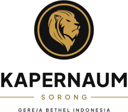
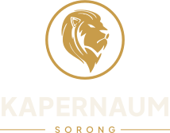
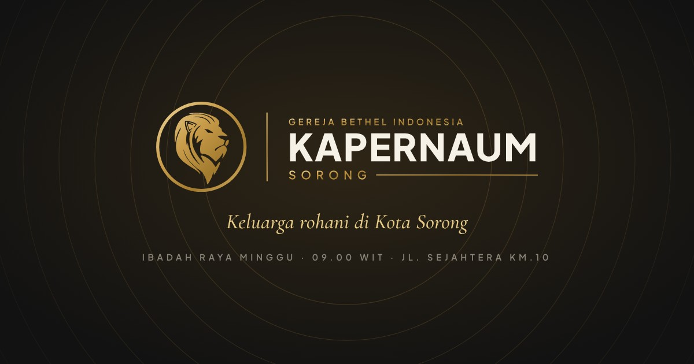
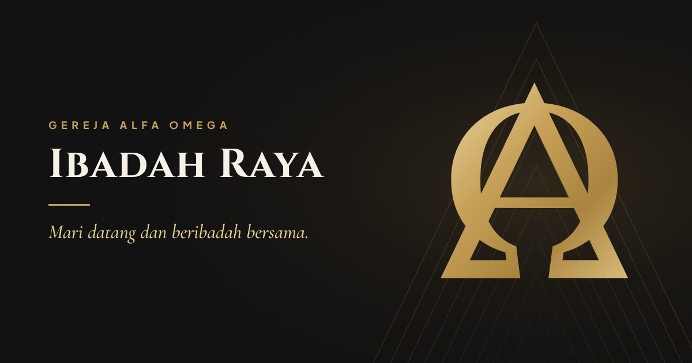

KAPERNAUMSORONG
“Sesungguhnya, singa dari suku Yehuda, yaitu tunas Daud, telah menang.”WAHYU 5:5
Lambang singa mengingatkan kami pada Yesus, Singa dari suku Yehuda. Kapernaum adalah kota di tepi Danau Galilea tempat Yesus tinggal dan memulai pelayanan-Nya. Panduan ini mengatur cara memakai logo, warna, dan font supaya gereja tampil sama di mana pun, dari website sampai umbul-umbul.
Satu lambang, enam susunan
Lambang singa dibangun ulang dari logo asli (singa emas bertekstur glitter): cincin dan piringan menjadi lingkaran sempurna, singa di-trace lalu dihaluskan, jadi tetap tajam dari favicon 16 px sampai umbul-umbul setinggi 2,6 meter.


Varian warna
Pakai hanya lima varian ini. Setiap susunan tersedia dalam kelimanya (lambang cukup empat), sebagai SVG (vektor) dan PNG transparan.
Ruang aman & ukuran minimum
Sisakan ruang kosong di sekeliling logo minimal X, yaitu seperempat tinggi lambang. Jangan ada teks, foto, atau tepi kertas di dalam area ini. Di bawah 24 px (favicon) pakai singa saja tanpa cincin.
| Susunan | Layar (min.) | Cetak (min.) |
|---|---|---|
| Lambang | 24 px | 10 mm tinggi |
| Horizontal ringkas | 120 px lebar | 30 mm lebar |
| Horizontal | 160 px lebar | 40 mm lebar |
| Bertumpuk lengkap | 120 px lebar | 35 mm lebar |
| Bordir | - | 45 mm tinggi lambang |
Yang tidak boleh
Hitam, emas, gading
Tiga warna inti membawa makna: hitam untuk keteguhan Allah yang kekal, emas untuk kemuliaan-Nya, gading untuk terang dan kesucian. Lima warna pendukung dipakai secukupnya.
Takaran
Satu desain idealnya didominasi satu warna dasar (hitam atau gading). Emas adalah aksen, bukan latar penuh, kecuali untuk barang khusus seperti umbul-umbul varian emas.
Kontras: teks kecil di latar gading pakai Hitam Malam (16,6 : 1). Emas Singa di latar hitam aman untuk semua ukuran (7,8 : 1). Emas di latar gading hanya untuk garis, ikon, atau judul besar.
Cetak: nilai CMYK di atas adalah konversi langsung dari RGB, jadi minta proof dulu ke percetakan. Untuk emas yang berkilau pakai tinta emas metalik (misalnya Pantone 871 C) atau foil emas. Untuk hitam pekat pakai rich black C60 M40 Y40 K100.
Dua keluarga huruf, tiga peran
Keduanya dari Google Fonts dengan lisensi SIL Open Font License: gratis, boleh dipakai untuk cetak, website, dan merchandise. File TTF-nya ada di folder brand/fonts untuk dipasang di komputer atau diunggah ke Canva.
Pola Gema Cincin
Lingkaran tipis sepusat yang memantulkan cincin lambang, makin jauh makin pudar seperti gema. Dipakai sebagai latar halus di banner, slide, dan cetakan. Jangan menimpa logo atau teks kecil.

TikTok, YouTube, Instagram, Facebook
Foto profil dibuat sama di keempat platform supaya jemaat langsung mengenali akun resmi. Instagram dan TikTok tidak punya banner profil, jadi untuk keduanya disiapkan sampul sorotan (highlight), template post, dan sampul video.

| Platform | File | Keterangan |
|---|---|---|
| 1080 × 1080 | tampil ±110 px di ponsel | |
| 1080 × 1080 | tampil 176 px (komputer), 196 px (ponsel) | |
| YouTube | 800 × 800 | ukuran anjuran YouTube, tampil 98 px |
| TikTok | 1080 × 1080 | minimal 200 × 200 px |
media-sosial/alternatif untuk acara khusus.YouTube
Banner 2560 × 1440 px. Logo dan jadwal ibadah berada di area aman 1546 × 423 px di tengah, jadi tidak terpotong di ponsel, laptop, maupun TV.


Sampul 1640 × 624 px. Di ponsel sisi kiri-kanan terpotong, jadi semua isi diletakkan di tengah.

Tujuh sampul sorotan (1080 × 1920; Instagram menampilkan lingkaran di tengahnya), dua template post 4:5, dan satu template story.


TikTok
Sampul video 1080 × 1920. Judul diletakkan di tengah karena grid profil TikTok memotong bagian atas dan bawah, dan tombol aplikasi menutupi sisi kanan bawah.


Kit website
Folder brand/web siap disalin ke folder publik website: logo SVG/PNG, favicon dan ikon aplikasi, 29 ikon garis, gambar share untuk 10 halaman, latar hero, pola, placeholder, loader, font WOFF2, dan CSS token. Penjelasan tiap file ada di brand/web/README.md, contoh pemakaiannya di brand/web/contoh.html.



<link rel="icon" href="/favicon.ico" sizes="48x48"> <link rel="icon" href="/favicon.svg" type="image/svg+xml"> <link rel="apple-touch-icon" href="/apple-touch-icon.png"> <link rel="manifest" href="/site.webmanifest"> <meta name="theme-color" content="#121212"> <link rel="stylesheet" href="/css/brand-tokens.css"> <meta property="og:image" content="https://DOMAIN-GEREJA/og/og-beranda.jpg">
Kaos, jaket, bendera, umbul-umbul
Ilustrasi penerapan logo. File desain untuk vendor ambil dari folder logo/svg (vektor), jangan dari gambar mockup.


10 website gereja untuk memilih arah desain
Dipilih dari ulasan "best church websites" 2025–2026 supaya arahnya beragam. Situs-situs ini dipastikan masih aktif lewat hasil pencarian (Oktober 2026), tetapi tidak dibuka langsung saat riset; buka setiap link sendiri untuk melihat tampilan terbarunya.
Kemuliaan Gelap
Latar hitam, video ibadah layar penuh, aksen emas. Paling dramatis dan paling dekat dengan logo emas di atas hitam.
Klasik Terang
Latar gading, ruang kosong lega, judul serif besar. Tenang, berwibawa, mudah dibaca jemaat segala usia.
Hangat & Komunitas
Foto jemaat sendiri, ajakan "Kunjungi Kami" yang jelas. Paling ramah untuk pengunjung baru.
Rekomendasi: beranda memakai hero gelap dari Arah A, halaman isi (jadwal, renungan, tentang kami) memakai Arah B. Tombol dan garis emas menjadi benang merah keduanya.
Fitur yang dimiliki hampir semua situs di atas
- Halaman "Kunjungi Kami / Pertama Kali?": jam ibadah dan alamat paling atas, parkir, gambaran ibadah, info Sekolah Minggu.
- Tonton online + arsip khotbah yang bisa difilter per seri, pembicara, atau kitab, lengkap dengan bahan diskusi Komsel.
- Persembahan online yang selalu terlihat di header: QRIS, transfer bank, virtual account, e-wallet.
- Komsel dan langkah berikutnya: gabung Komsel, baptisan, melayani, kelas pertumbuhan.
- Acara dan kalender dengan pendaftaran online dan halaman kampanye (Paskah, Natal, doa & puasa).
- Mobile-first: 4–6 menu, tampilan seperti aplikasi di ponsel, tombol ID/EN.
Isi folder brand
Semua file ada di repositori website gereja. Gambar bisa dibuat ulang dengan skrip di folder tools bila warna atau teks perlu diubah.
brand/ ├── logo/ │ ├── svg/ 28 file vektor: lambang, horizontal, horizontal-ringkas, bertumpuk, │ │ bertumpuk-lengkap, wordmark × warna / hitam / emas / emas-gading / putih │ ├── png/ versi PNG transparan (2000 px) │ └── asli/ logo asli sebagai arsip ├── fonts/ Plus Jakarta Sans, Cormorant Garamond (TTF + lisensi OFL) ├── media-sosial/ │ ├── instagram/ profil, 7 sampul sorotan, post ayat, post sambutan, story │ ├── facebook/ profil, sampul 1640×624 │ ├── youtube/ profil 800, banner 2560×1440, thumbnail 1280×720, watermark │ ├── tiktok/ profil, sampul video 1080×1920 │ └── alternatif/ profil versi terang ├── web/ kit website: favicon, logo, ikon, gambar share, hero, font, CSS ├── mockup/ kaos hitam, kaos putih, jaket bomber, bendera, umbul-umbul ├── panduan-brand.html halaman ini └── panduan-brand-kapernaum.pdf versi PDF untuk dibagikan / dicetak referensi-website/README.md 10 referensi lengkap + sumber